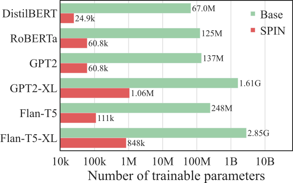
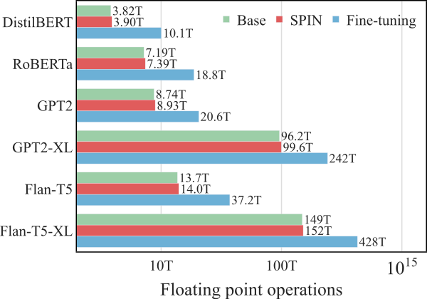
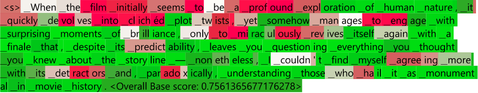
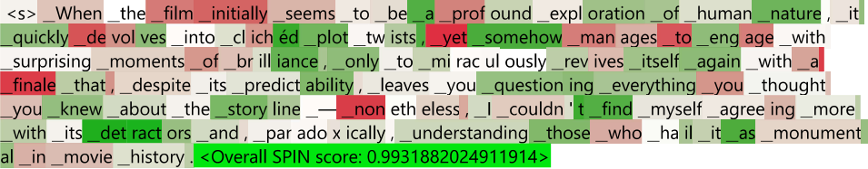
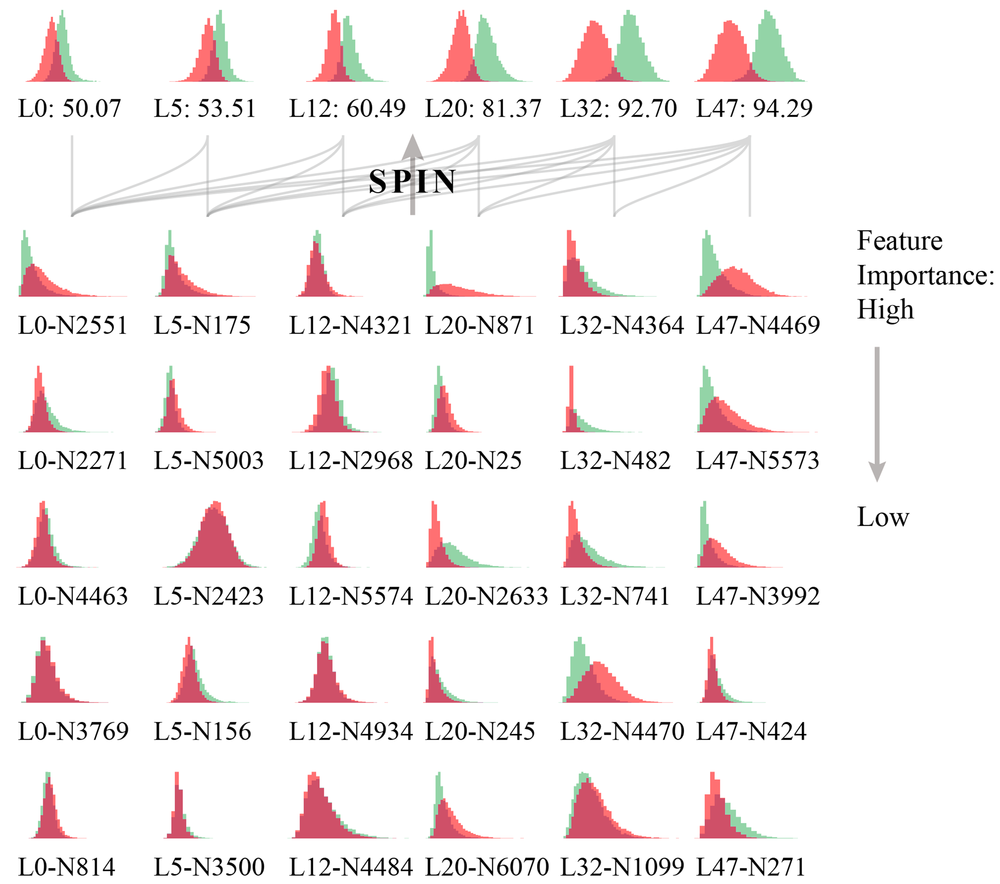
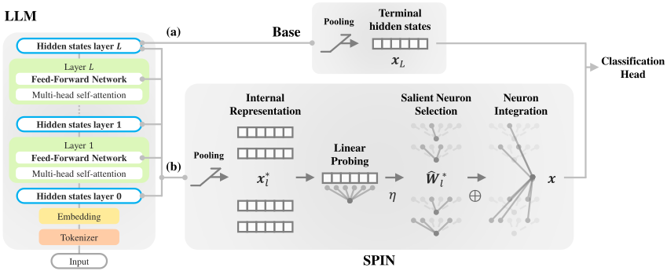
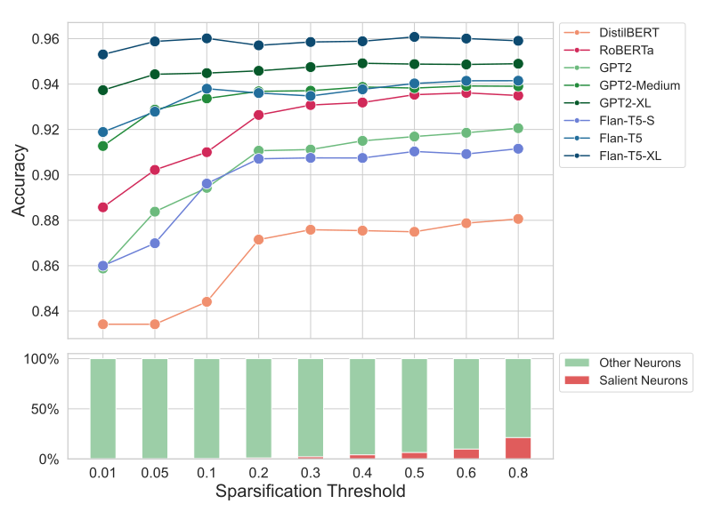

A conventional text classifier reads the model’s final layer. SPIN sparsifies and integrates internal neurons across layers: we train a small linear probe at each layer to select task-relevant neurons, then combine their representations in a classification head. The model’s weights stay untouched; only the probes and the head are trained.
Performance. SPIN outperforms final-layer classifiers across all eight pretrained backbones and three benchmarks. On SST-2, it reduces classification errors by up to 71.4%. On IMDb, it reaches 96.12% accuracy, close to 96.21% for fully fine-tuned XLNet.
-
Speedup. SPIN uses less than half the estimated training compute of full fine-tuning. At inference, it can skip 40% of the model’s layers while retaining over 99% of its full-depth accuracy.1
Interpretability. The linear probes identify which neurons, in which layers, carry information about the task. A classifier trained on whole sentences can also be applied token by token to examine how its prediction changes through a text.
Performance across model families
We evaluate SPIN on IMDb movie reviews, SST-2 sentiment classification and EDOS sexism detection. The eight pretrained backbones cover encoder, decoder and encoder-decoder architectures. In each comparison, the baseline and SPIN use the same frozen backbone and train a classifier with the dataset’s labels. The difference is which internal representations they read.
IMDb: Up to 59.2% fewer errors
SST-2: Up to 71.4% fewer errors
EDOS: Up to 25.0% higher macro-F1
Each version of SPIN outperforms its corresponding baseline on all three benchmarks. For Flan-T5-S on EDOS, macro-F1 rises from 59.62 to 74.51, a relative improvement of about 25%.2 SPIN also improves models whose baseline performance is already high: GPT2-XL’s IMDb accuracy increases from 91.86% to 94.92%.
With Flan-T5-XL, SPIN reaches 96.12% accuracy on IMDb, compared with 96.21% for fully fine-tuned XLNet, the published state-of-the-art reference used in the paper. Compared with Flan-T5-XL’s own final-layer classifier, SPIN reduces the error rate from 9.50% to 3.88%, a 59.2% reduction.
Full benchmark results
| Backbone | IMDb | SST-2 | EDOS | |||
|---|---|---|---|---|---|---|
| Base | SPIN | Base | SPIN | Base | SPIN | |
| DistilBERT | 86.95 | 89.78 | 81.88 | 83.94 | 65.09 | 75.79 |
| RoBERTa | 89.67 | 93.61 | 84.06 | 90.59 | 68.81 | 73.50 |
| GPT2 | 87.72 | 91.94 | 85.89 | 87.73 | 68.57 | 76.08 |
| GPT2-M | 88.59 | 93.92 | 86.12 | 90.25 | 71.17 | 75.74 |
| GPT2-XL | 91.86 | 94.92 | 90.02 | 93.23 | 72.56 | 76.79 |
| Flan-T5-S | 84.08 | 91.15 | 77.17 | 88.99 | 59.62 | 74.51 |
| Flan-T5 | 90.01 | 94.14 | 78.26 | 92.32 | 66.64 | 78.04 |
| Flan-T5-XL | 90.50 | 96.12 | 84.75 | 95.64 | 70.08 | 81.48 |
| Fine-tuned reference (2024) | 96.21 | 97.50 | 82.35 | |||
Further experiments extend the comparison to larger models and more classes. On LLaMA2-13B, IMDb accuracy rises from 94.55% to 96.06%. On AG News, SPIN improves all three tested backbones using multinomial logistic regression as the probe and classification head.
Larger models and multiclass results
| Backbone | Dataset | Base | SPIN |
|---|---|---|---|
| LLaMA2-7B | IMDb | 94.04 | 95.76 |
| LLaMA2-13B | IMDb | 94.55 | 96.06 |
| DistilBERT | AG News | 91.18 | 92.21 |
| GPT2 | AG News | 90.64 | 92.19 |
| Flan-T5-S | AG News | 85.68 | 91.89 |
Lower training cost, earlier predictions
SPIN never backpropagates through the language model. Training consists of forward passes with frozen weights to record the representations, then fitting the linear probes and classification head on those recordings. For GPT2-XL, that means training about one million parameters instead of 1.6 billion.
Trainable parameters


Estimated training compute


The forward passes dominate SPIN’s training cost. It uses only slightly more compute than training a final-layer classifier, and less than half the estimated operations of a single epoch of full fine-tuning. The probes can be fitted independently on the recorded representations.
At inference, SPIN can classify text using only the layers up to a chosen exit point. With 60% of its layers, GPT2-XL reaches 94.73% IMDb accuracy, compared with 94.92% at full depth. Flan-T5 and Flan-T5-XL reach their full-depth accuracy at 60%. The useful exit point depends on the backbone: DistilBERT loses more than two points at the same depth.
Accuracy at each exit depth
| Backbone | 20% | 40% | 60% | 80% | 100% |
|---|---|---|---|---|---|
| DistilBERT | 85.20 | 84.73 | 87.45 | 88.67 | 89.78 |
| RoBERTa | 87.06 | 89.72 | 93.13 | 93.50 | 93.61 |
| GPT2 | 87.51 | 89.00 | 91.10 | 91.88 | 91.94 |
| GPT2-M | 88.52 | 91.36 | 93.36 | 93.92 | 93.92 |
| GPT2-XL | 89.66 | 93.15 | 94.73 | 94.92 | 94.92 |
| Flan-T5-S | 82.88 | 87.74 | 90.93 | 91.32 | 91.32 |
| Flan-T5 | 84.58 | 92.55 | 94.14 | 94.14 | 94.14 |
| Flan-T5-XL | 89.21 | 95.28 | 96.12 | 96.12 | 96.12 |
Further gains after fine-tuning
SPIN needs only access to a model’s internal representations, so it can also be applied after the model has been fine-tuned for a task. On publicly available fine-tuned DistilBERT, RoBERTa and GPT2 checkpoints, SPIN improves on the model’s own classifier in every available comparison.
| Backbone | IMDb | SST-2 | EDOS | |||
|---|---|---|---|---|---|---|
| Base | SPIN | Base | SPIN | Base | SPIN | |
| DistilBERT | 92.80 | 92.88 | 91.05 | 91.19 | 78.74 | 81.12 |
| RoBERTa | 94.67 | 95.68 | 94.03 | 94.38 | 80.48 | 80.88 |
| GPT2 | 94.06 | 94.50 | 91.51 | 92.32 | n/a | n/a |
The gains here are smaller, often under one point, because the fine-tuned model has already adapted to the task. Five-fold cross-validation on IMDb confirms that all three improvements are significant at p < 0.05. On a LoRA-fine-tuned DistilBERT, SPIN raises IMDb accuracy from 87.71% to 90.58%.
Reading the prediction through a text
A classifier trained on pooled sentence representations can also be applied token by token. In the IMDb review below, both classifiers track shifts in sentiment as the text unfolds.3 SPIN shows clearer changes at turns such as “yet somehow”, “despite” and “nonetheless”.


(a) Baseline

(b) SPINFor encoder models, SPIN’s use of representations from all tokens also allows direct transfer to token-wise predictions; a conventional [CLS]-based classifier needs repeated passes over sliding windows.
What the selected neurons reveal
SPIN can be inspected at two levels: the individual neurons selected by the probes, and the classifier built from them. In this GPT2-XL example, later-layer neurons distinguish positive and negative reviews more clearly, while combining neurons across layers separates the classes more cleanly than any individual neuron shown.

Why look beyond the final layer?
Interpretability research has repeatedly found task-relevant information inside language models. Radford et al. (2017) identified a single neuron that classifies sentiment;4 later work used selected transformer neurons as classifiers. SPIN builds on these observations to make a general classification method that works across model families.
A final-layer classifier uses a single representation of the text. SPIN gives the classifier access to selected features from several depths, combining simpler features in lower layers with more abstract ones higher up. Filtering matters: irrelevant neurons add noise that dilutes the features useful for the task.

Both parts of SPIN contribute. On GPT2-XL and IMDb, selecting one neuron per layer with the probes gives 93.71% accuracy, compared with 69.90% for random selection.5 Combining layers also outperforms the best individual layer at every exit depth we tested.
Neuron selection and integration in more detail
We pool each layer’s hidden states or feed-forward activations over tokens to obtain a fixed-size vector. An L1-regularized logistic regression then predicts the task label from that layer’s representations. The penalty pushes many weights to zero; we normalize the remaining weight magnitudes and keep the smallest set whose cumulative weight reaches a chosen threshold.
At a threshold of 0.4, SPIN keeps about 3% of the neurons in each layer in this analysis. The selected representations are concatenated into one feature vector, and a linear classification head is trained on it.

| Neurons per layer | Random | Probe (SPIN) |
|---|---|---|
| 1 | 69.90 | 93.71 |
| 5 | 74.78 | 94.24 |
| 10 | 82.75 | 94.42 |
| 50 | 87.01 | 94.47 |
| 100 | 90.98 | 94.63 |
IMDb accuracy of GPT2-XL with neurons selected by the probes or at random.
| Layers used | Best single layer | Integrated (SPIN) |
|---|---|---|
| 8 | 87.17 | 88.34 |
| 16 | 89.84 | 92.09 |
| 24 | 92.72 | 94.70 |
| 32 | 94.12 | 94.91 |
| 48 | 92.41 | 94.92 |
IMDb accuracy of GPT2-XL using the best individual layer or the integrated neurons up to each depth.
The approach requires access to internal representations, so it cannot be used through a text-only API. We kept the classification head linear to match prior work and make its inputs inspectable; a more sophisticated head could improve accuracy. The paper includes the mathematical formulation, hyperparameter settings and remaining experiments.
For the tasks we studied, intermediate representations provide useful features even when the backbone’s weights stay fixed. SPIN shows how selecting and combining those features can improve classification, reduce adaptation cost and make predictions before the final layer.